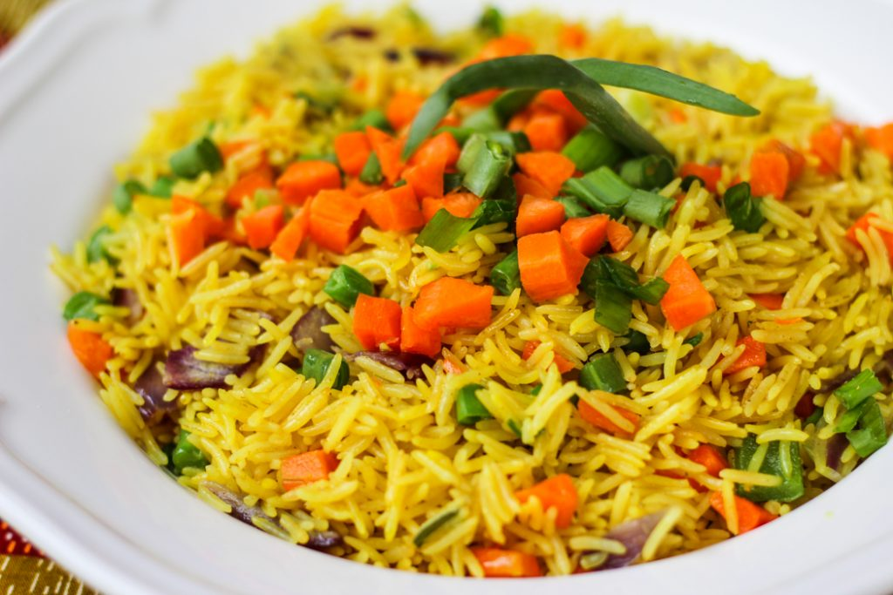

Fried Rice

Description
Fried Rice is a delicious and versatile dish that's a staple in many cuisines around the world..
The key to perfect fried rice is using leftover rice that has been chilled, which prevents the rice grains from clumping together during the stir-frying process. The dish is seasoned with soy sauce, garlic, ginger, and sometimes a splash of sesame oil, giving it a savory and slightly smoky flavor.
Ingredients
- 3 cups long-grain parboiled rice
- 1/2 cup vegetable oil
- 1 pound mixed vegetables (carrots, peas, green beans, sweet corn)
- 1/2 pound cooked chicken, diced
- 1/2 pound shrimp, peeled and deveined
- 1 medium onion, chopped
- 2-3 cloves garlic, minced
- 1-2 teaspoons curry powder
- 1 teaspoon thyme
- 1-2 teaspoons ground turmeric
- 2-3 tablespoons soy sauce
- 1-2 scotch bonnet peppers, chopped
- 4 cups chicken stock or water
- 2 bouillon cubes or 1 tablespoon bouillon powder
- Salt
- Black pepper
- Green onions, chopped
Steps
- Cook the rice according to package instructions and set aside.
- Heat oil in a pan and sauté onions, garlic, and scotch bonnet peppers.
- Add curry powder, thyme, and turmeric, and cook for 1-2 minutes.
- Add mixed vegetables and cook until tender.
- Add cooked chicken and shrimp (if using), and stir to combine.
- Mix in soy sauce, chicken stock, and bouillon cubes. Simmer for 5 minutes.
- Add the cooked rice and stir well to combine.
- Season with salt and pepper to taste. Garnish with chopped green onions.
- Serve hot and enjoy!